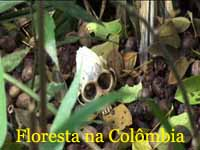

No Rio de Janeiro as forças policiais apreendem toneladas de cocaína anualmente. É uma das drogas mais consumida nestas terras de passeatas e atos teatrais anti-violência. Mas você já parou para pensar como é feita a cocaína? Qual o processo mecânico e químico para transformar folhas de uma simples planta, no entorpecente motor da violência mundial? É o que veremos agora com a ajuda de um vídeo que tinha armazenado em meu computador há um tempão, e já tinha até esquecido.
Vamos descobrir como é o início da fabricação do pó branco que era símbolo de status nas principais rodinhas intelectuais do Rio antigo, e que era (ou é!) servido em bandejas nas festas da mais alta roda da sociedade brasileira.
O vídeo abaixo, pelo que entendi, foi feito por um jornalista colombiano, e que mantinha um blog chamado "Colombia Reports". Pena que o site não é atualizado desde 2006. Não sei nem se o editor ainda está vivo:
[youtube 5cag4d3ELww]
Link para o vídeo, se não abriu acima
As folhas de coca são arrancadas dos pés e levadas para tendas escondidas em meio à floresta, onde são trituradas com o auxílio de um cortador de grama. Depois são reunidas com uma vassoura, e colocadas sobre um plástico, formando um pequeno monte.Sobre as folhas são jogadas então generosas porções de cimento. Isso mesmo, cimento para construção. Pega-se então um galão com uma mistura de soda cáustica, amônia e gasolina, que é colocado em um regador para molhar as folhas de coca trituradas.
Para ajudar a misturar, os camponeses ficam andando sobre a pilha de mato, e aproveitam para adicionar uma boa dose de cal, aquele pó branco que se mistura com água para pintar paredes por um custo baixo. Depois continuam pisoteando a mistura, e aproveitam para regar novamente com bastante gasolina. Em seguida, misturando tudo ainda com os pés, regam também com uma solução de ácido sulfúrico.
Após, toda aquela lama formada é colocada em um tonel, onde recebe mais alguns litros de gasolina pura e gasolina reutilizada. Deixam então a mistura descansar.
Voltando aos trabalhos, mais uma dose de ácido sulfúrico é colocada em um tonel, onde a pasta é derramada, atravessando um pedaço de pano sujo para filtrar as "impurezas". São três processos de filtragem sucessivos. Depois de tantas filtragens, é adicionado mais amônia, provocando uma reação química com o líquido extraído de toda aquela mistura. Filtram então mais uma vez em um pano sujo, e pronto: pasta base de cocaína!
É necessário depois outros processos químicos com acetona e outras substâncias para formar o famoso e disputado pó branco. Quando chega no Rio, é misturado com vidro moído, fermento em pó, lidocaína, procaína, benzocaína, pó de giz, pó de mármore, dentre outros produtos curiosos, para só então ser colocado à venda na boca de fumo mais próxima de sua casa.
Claro, o processo de fabricação do entorpecente tem variações. Neste outro vídeo é mostrado o fabrico da pasta de coca utilizando-se outros componentes, como o querosene.
É de se pensar: os milhões de viciados que se espalham pelas favelas e condomínios de luxo por todo o Brasil ficam doidões por causa da coca mesmo, ou por causa de tanto produto químico? Loucura...